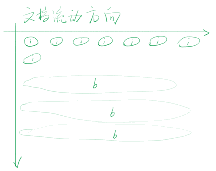
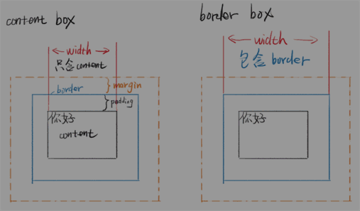

5-CSS基础概念
0. 其他#
-
Emmet
- div>div>div>div (内嵌)
- .content-box (<div class="content-box">)
- o:h (overflow: hidden;)
- span{第$个span元素}*8
- span.ib{第$个inline-block元素}*8
-
CSS标准
google: css spec
google: css 2.1 中文版
-
CSS 验证
google: w3c css validator
-
CSS学习方法同HTML
-
取色软件
Snipaste
1. 目标#
-
CSS 基础概念
- CSS学习方法，CSS语法，CSS排错
- 文档流（Normal Flow），两种盒模型
2. 主体#
1) 层叠指什么？#
这些特性使得 CSS 极度灵活
这也为 CSS 后来被吐槽留下了隐患
-
样式层叠
可以多次对同一选择器进行样式声明
-
选择器层叠
可以用不同选择器对同一个元素进行样式声明
-
文件层叠
可以用多个文件进行层叠
2) CSS 的版本#
CSS 2.1: 使用最广泛的版本（IE支持）
CSS 3: 现代版本，分模块（IE 8 部分支持）
3) 查询哪些浏览器支持哪些特性#
-
使用 caniuse.com
输入你关心的样式，比如 border-radius 或 filter
下方会详细说明兼容 bug 有哪些（翻译成中文）
网站主一开始自己测试了一部分浏览器
4) 语法超级简单#
-
语法一：样式语法
选择器 { 属性名: 属性值; /*注释*/ }注意事项：
-
区分大小写
-
没有 // 注释
-
最后一个分号可以省略，但建议不要省略
-
-
语法二：at 语法
@charset "UTF-8"; @import url(2.css); @media (min-width: 100px) and (max-width: 200px) { 语法一 }注意事项：
-
@charset 必须放在第一行
-
前两个 at 语法必须以分号 ; 结尾
-
@media 语法会单独教学
-
charset 是字符集的意思，但 UTF-8 是字符编码 encoding，这是历史遗留问题
-
5) 如何调试 CSS#
- 看 vscode 的颜色提示
- 看 webstorm 的颜色提示
- 使用 W3C 验证器（在线/命令行工具）不用试了
-
使用开发者工具看警告
如何使用开发者工具
-
找到你脑中的标签
-
看它是否有选择器
-
看它的样式是否被划掉
-
看它的样式是否有警告
-
6) Border 调试法#
CSS 的 border 调试法就相当于 JS 的 log 调试法
-
步骤
-
怀疑某个元素有问题，就给这个元素加 border
-
border 没出现？说明选择器错了或者语法错了
-
border 出现了？看看边界是否符合预期
-
bug 解决了才可以把 border 删掉
-
7) 在哪查资料#
不推荐买任何书，CSS 和 HTML 一样，以练为主
-
网站推荐
Google 搜索关键词时加 MDN
CSS tricks（英文）
张鑫旭的博客
8) 在哪搜练习素材#
每个类型的临摹一两个即可
PC 网站、手机网站、UI 套件
再多无益
-
PSD
-
效果图（不提供下载）
- dribbble.com 顶级设计师社区
- 可以用肉眼模仿它
-
商业网站
直接模仿你常去的网站
9) 要理解几个重要的概念#
- 文档流 Normal Flow
- 块、内联、内联块
- margin 合并
- 两种盒模型（border-box 更符合人类思维）

-
inline: span
不能设置 width, height
可以内嵌inline
实际高度：line-height间接（如果字体不一致，实际高度会变），跟padding无关
line-height会继承，所以写哪里都一样
-
block: div
默认 width: auto; 不是100%，能有多宽有多宽，不影响其他元素
除非特殊情况，永远不要写 width: 100%; 可以指定 px 或 em
可以设置 width, height
如果 div 里什么都没有，div的高度为0
-
inline-block
默认和inline一样
可以设置 width, height
-
文档流
-
流动方向
- inline 元素从左到右，到达最右边才会换行
- block 元素从上到下，每一个都另起一行
- inline-block 也是从左到右
-
宽度
- inline 宽度为内部 inline 元素的和，不能用 width 指定
- block 默认自动计算宽度，可用 width 指定
- inline-block 结合前两者特点，可用 width
-
高度
- inline 高度由 line-height 间接确定，跟 height 无关
-
block 高度由内部文档流元素决定，可以设 height
脱离文档流的不算
-
inline-block 跟 block 类似，可以设置 height
-
-
overflow 溢出
-
当内容大于容器
等内容的宽度或高度大于容器的，会溢出
-
可用 overflow 来设置是否显示滚动条
- auto 是灵活设置
- scroll 是永远显示
- hidden 是直接隐藏溢出部分
- visible 是直接显示溢出部分
- overflow 可以分为 overflow-x 和 overflow-y
-
-
脱离文档流
所在的容器不把你算在高度里面
-
回忆一下
block 高度由内部文档流元素决定，可以设 height
这句话的意思是不是说，有些元素可以不在文档流中
-
哪些元素脱离文档流
- float
- position: absolute / fixed
-
怎么让元素不脱离文档流
不要用上面属性不就不脱离了
-
-
两种盒模型
-
content-box
内容盒 - 内容就是盒子的边界
-
border-box
边框盒 - 边框才是盒子的边界

-
公式
content-box width = 内容宽度
border-box width = 内容宽度 + padding + border
-
哪个好用
border-box 好用
同时指定 padding、width、border 就知道为什么了
-
-
margin 合并
-
哪些情况会合并
父子 margin 合并
兄弟 margin 合并
-
如何阻止合并
- 父子合并用 padding / border 挡住
- 父子合并用 overflow: hidden 挡住
- 父子合并用 display: flex，不知道为什么
- 兄弟合并是符合预期的
- 兄弟合并可以用 inline-block 消除
- 总之要一条一条死记，而且 CSS 的属性逐年增多，每年都可能有新的
-
-
基本单位
-
长度单位
- px 像素
- em 相对于自身 font-size 的倍数
- 百分数
- 整数
- rem：等你把 em 滚瓜烂熟了再问 rem
- vw 和 vh
- 其他长度单位都用得很少，不用了解
-
颜色
- 十六进制 #FF6600 或者 #F60
- RGBA 颜色 rgb(0,0,0) 或者 rgba(0,0,0,1)
- hsl 颜色 hsl(360,100%,100%)
-